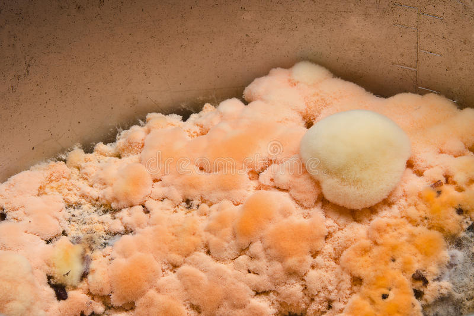

Motivos para não deixar o arroz fora da geladeira
Ele apodrece

- Com o arroz podre não podemos comer
- Fica mais dificil de limpar a panela
- É nojento
O arroz podre deixa um mal odor na casa
- Com a casa fedida fica dificil de morar nela
- As pessoas vão falar mal da nossa republica
- As visitas vão sentir o cheiro e não vão voltar
O Luis vai me bater
- O Luis possui uma força fisica maior que a minha
- Ele vai ficar irritado e isso resultará em agressão fisica
O caique pode me fazer comer o arroz
- Comendo o arroz podre eu posso passar mal e até morrer
- Mesmo que eu não morra se eu vomitar ele vai me fazer limpar
Se eu fizer isso novamente, vou ficar mais 6 meses como bicho
- Quero poder me vestir normalmente nas festas
- Não quero obedecer mais ninguem
- Ser bicho é uma merda
O arroz podre pode atrair baratas para nossa casa

- Baratas podem trazer doenças
- Baratas são nojentas
- O Luis tem medo
Quer saber se estou gostando da rep? clique no botão abaixo
AmaZona